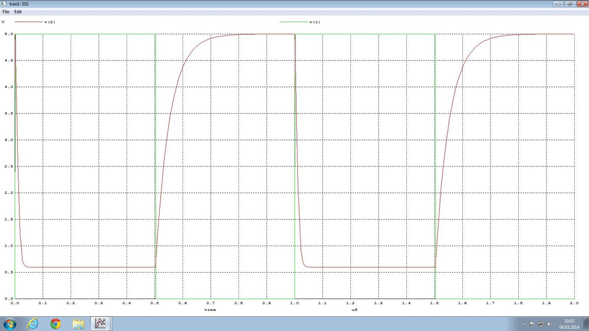

· EEM312
EEM312 Digital Electronics: Y1 Reports, SPICE Simulation of a Resistor-Loaded NMOS Inverter (5 V and 3 V)
EEM312 – Sayısal Elektronik · 29.03.2011 · 16.10.2026
This post brings together the preliminary work and reports written for the first experiment of the Başkent University EEM312 Digital Electronics software laboratory, Y1: Inverter with a resistor-loaded NMOS: a preliminary work and report from the spring 2011 semester (A), a preliminary work, also from 2011 (B), and a preliminary work and report from 2014 (C). All of them are the work of friends; personal information has been removed. The lab handout itself is in the post EEM312 software laboratory handouts Y1–Y3. The PDFs with personal information redacted, the SPICE netlists, and the 2014 WinSPICE screenshots are in the ZIP at the end of the post.
Preliminary work: Spice3 commands
All three preliminary works explain the commands requested in the handout:
- DC analysis:
.DC SRCNAM VSTART VSTOP VINCR [SRC2 START2 STOP2 INCR2]. For example,.DC VCC 0 5 0.5sweeps the source from 0 V to 5 V in 0.5 V steps;.DC VDS 0 10 .5 VGS 0 5 1sweeps two nested sources. - Voltage source:
VNAME N+ N- DC value(e.g.,VCC 1 0 DC 5); pulse sourcePULSE(V1 V2 TD TR TF PW PER)(initial and pulse levels, delay, rise and fall times, pulse width, period). - Transient analysis:
.TRAN TSTEP TSTOP <TSTART <TMAX>>. - MOSFET:
MNAME DRAIN GATE SOURCE BULK MODELNAME L=… W=…; the model is defined with the.MODELcommand. - Plotting:
.PLOT DC V(2) VS V(1),.PLOT TRAN V(2) V(1); in WinSPICE, a.control … plot … .endcblock. - Definitions: V_OH/V_OL are the output high/low levels, V_IH/V_IL are the input voltages at which the slope is −1, V_M is the point where V_in = V_out, NM_H = V_OH − V_IH, NM_L = V_IL − V_OL; t_r, t_f are the 10%–90% times, t_pHL, t_pLH are the 50% delays, t_d = (t_pHL + t_pLH)/2.
The simulated circuit
The circuit is the same in both reports: a 50 kΩ load resistor, a 1 pF load capacitance, an NMOS with L = 5 µm, W = 10 µm, and a 0–5 V pulse input with a 1 µs period (netlist from report A):
VDC 3 0 DC 5
VIN 1 0 PULSE(0 5 0 2NS 2NS 504NS 1US)
C1 2 0 1PF
R1 3 2 50K
M1 2 1 0 0 M1 L=5U W=10U
.MODEL M1 NMOS (VTO=1 KP=20U GAMMA=0.37 PHI=0.6 CBD=3.1E-15 CBS=3.1E-15)
.DC VIN 0 5 0.01
.TRAN 0.1NS 1US
.PLOT DC V(2) VS V(1)
.PLOT TRAN V(2) V(1)
.END
Results: 5 V and 3 V supply
| Quantity | A, 5 V | A, 3 V | C, 5 V | C, 3 V |
|---|---|---|---|---|
| V_OL | 0.7 V | 0.5 V | 0.59 V | 0.697 V |
| V_OH | 5 V | 3 V | 5 V | 3 V |
| V_IL | 1.5 V | 1.5 V | 2.0 V | 2 V |
| V_IH | 2.8 V | 2.3 V | 3.02 V | 2.565 V |
| V_M | 2.6 V | 2 V | 2.564 V | 2 V |
| NM_H | 2.2 V | 0.7 V | 1.98 V | 0.435 V |
| NM_L | 0.8 V | 1 V | 1.41 V | 1.303 V |
| t_r | 200 ns | 190 ns | 132.7 ns | 163 ns |
| t_f | 30 ns | 25 ns | 18.5 ns | 21 ns |
| t_pHL | 20 ns | 15 ns | 9 ns | 6 ns |
| t_pLH | 40 ns | 40 ns | 45.5 ns | 54 ns |
| t_d | 30 ns | 22.5 ns | 27.27 ns | 30 ns |
Observations:
- Since the output is connected to the supply through the 50 kΩ resistor, V_OH = V_DD; when the supply drops from 5 V to 3 V, V_OH and, with it, NM_H decrease noticeably.
- t_r is much longer than t_f: while the output rises, the 1 pF load is charged through 50 kΩ (RC = 50 ns, 10%–90% time ≈ 2.2·RC ≈ 110 ns), whereas while it falls, it is discharged through the small resistance of the conducting NMOS. For the same reason, t_pLH > t_pHL.
- Report A states that the change in supply affects the timing values very little, while V_OL and V_OH depend on V_DD.
- Ideal inverter (question 3): infinite input impedance, zero output impedance; the VTC is vertical in the transition region (infinite gain), V_M = V_DD/2, NM_H = NM_L = V_DD/2, with no undefined region and no t_r, t_f. Since the simulated circuit is not ideal, the output waveform appears with rounded corners.
Note: In report A, the noise margins are labeled "NM_H = V_OH − V_OL" and "NM_L = V_OL − V_IL"; the numerical values, however, were calculated with the correct definitions (NM_H = V_OH − V_IH, NM_L = V_IL − V_OL).
Note: In the 3 V results of report C, V_IL and V_M are written as the same value (2 V); V_IL should be smaller than V_M, so one of the values appears to have been misread from the graph.
The folder also contained another student report from 2014; since its measured values and text were an exact copy of report A, it was not included separately. The file y1_2017_nmos_100k.cir in the ZIP is the netlist for the 2017 version of the same experiment (100 kΩ load, 1 fF, W/L = 1.8/1.2 µm, Level 2 model, 3.1 V supply).